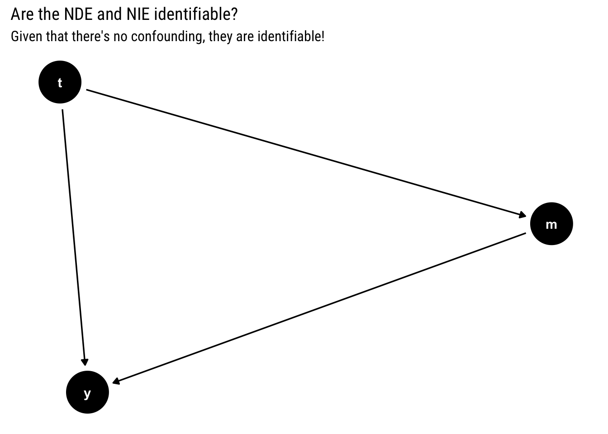
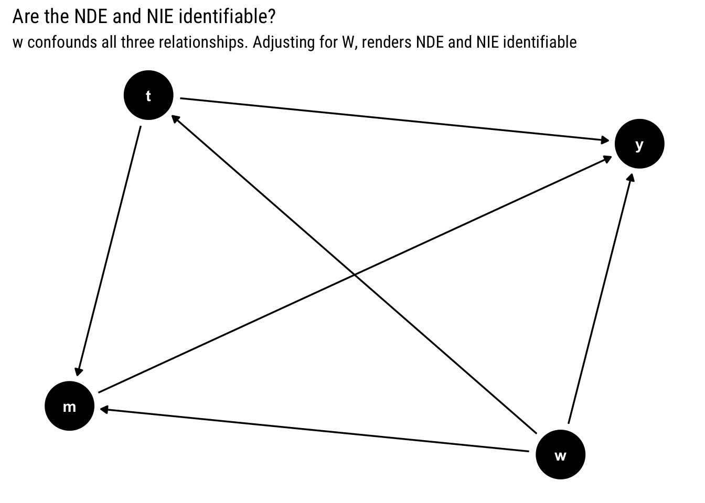
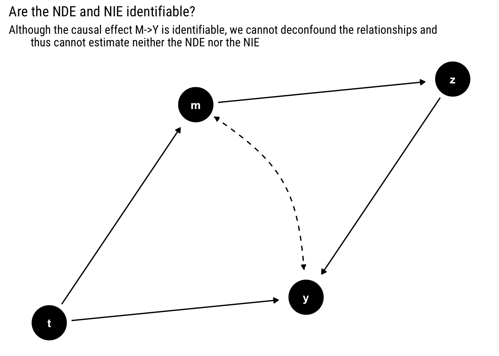
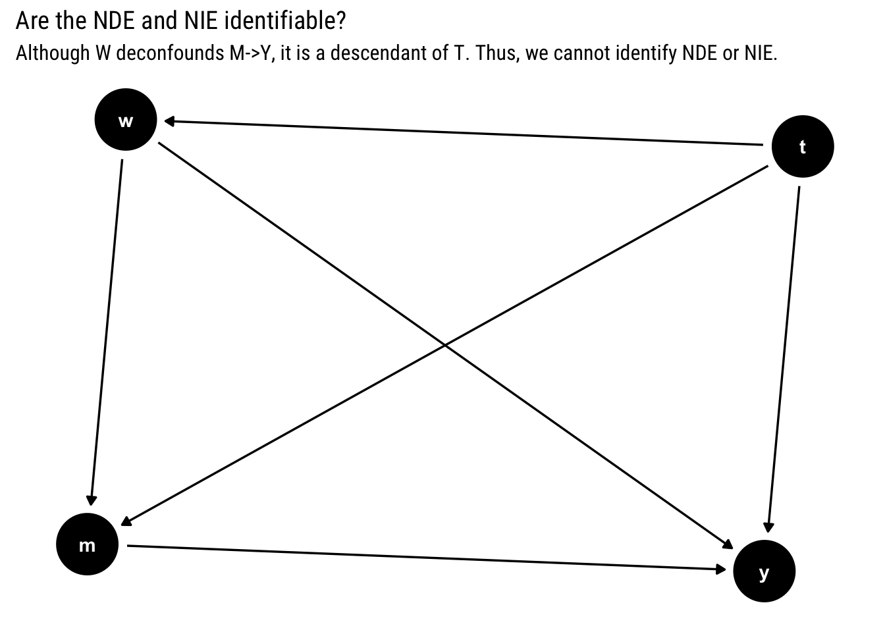
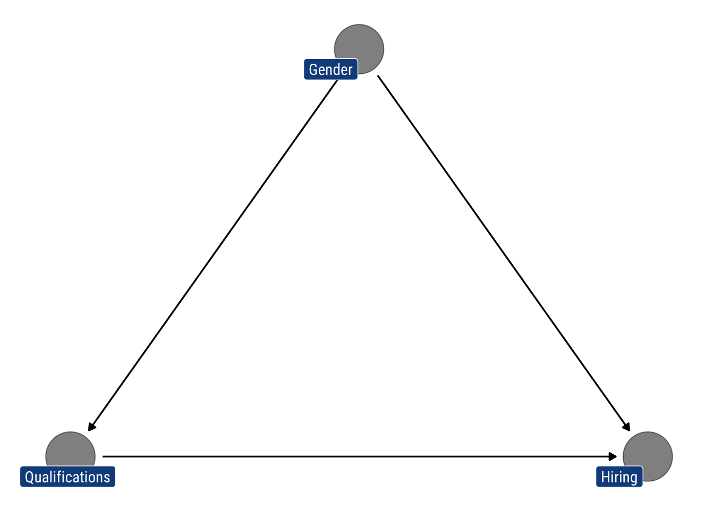

library(tidyverse)
library(ggdag)
extrafont::loadfonts(device="win")
theme_set(theme_dag(base_family = "Roboto Condensed"))Motivation
Kids are the prototypical question makers; they never stop asking questions. Just after you have answered a Why? question, they ask yet another Why? This is the problem of mediation analysis: if you answer that X causes Y, how does exactly the causal mechanism work? Is the causal effect direct or mediated through yet another variable M? Mediation analysis aims to disentangle the direct effect (which does not pass through the mediator) from the indirect effect (the part that passes through the mediator).
Judah Pearl has formulated an answer to the mediation problem by using counterfactuals. By giving precise counterfactual interpretations to both the Natural Direct Effects (NDE) and the Natural Indirect Effects (NIE), we can use the machinery of Causal Inference to solve the mediation problem.
In this post, we’ll study the counterfactual definition and identification criteria behind direct and indirect effects. Finally, we’ll solve a numerical example to put what we have learnt into practice.
All quotes come from Chapter 9 of Pearl’s Causality and Chapter 4 of his primer.
Counterfactual Definitions
We will use the following canonical Structural Model for a mediation problem to define the following direct and indirect effects.
\[ t=f_{T}\left(u_{T}\right) \quad m=f_{M}\left(t, u_{M}\right) \quad y=f_{Y}\left(t, m, u_{Y}\right) \] Let \(T\) be a binary treatment.
Control freak
So far, we have studied the total causal effect of \(X\) on \(Y\): \(P(Y|do(X))\). “The term “direct effect” is meant to quantify an effect that is not mediated by other variables in the model or, more accurately, the sensitivity of \(Y\) to changes in \(X\) while all other factors in the analysis are held fixed”. Notice that holding variables fixed implies an intervention that cannot always be mimicked by conditioning.
We will label this effect the Controlled Direct Effect (CDE). In counterfactual terms, it is defined thus:
[ \[\begin{aligned} \operatorname{CDE}(m) &=E\left[Y_{1, m}-Y_{0, m}\right] \\ &=E[Y \mid d o(T=1, M=m)]-E[Y \mid d o(T=0, M=m)] \end{aligned}\]]
CDE measures the expected increase in ( Y ) as the treatment changes from ( T=0 ) to ( T=1, ) while the mediator is set to a specified level ( M=m ) uniformly over the entire population.
However, intervening on the mediator is an over-kill. We need to be more intelligent.
Natural: Let it flow
A less stringent intervention is defined by studying the expected increase in ( Y ) as the treatment changes from ( T=0 ) to ( T=1, ), “while the mediator is set to whatever value it would have attained (for each individual) prior to the change, that is, under \(T = 0\)”. We will label this the Natural Direct Effect (NDE). In counterfactual terms:
\[ N D E=E\left[Y_{1, M_{0}}-Y_{0, M_{0}}\right] \] Whereas the CDE is made out of do-expressions, the NDE is defined in terms of nested counterfactuals. Therefore, according to Pearl’s Ladder of Causation and Bareinboim’s Causal Hierarchy Theorem, NDE requires a more elaborate causal knowledge to be identified than the CDE. That is, whereas the CDE could be estimated using experimental evidence, the NDE, in principle, cannot be estimated using only experimental evidence.
What about indirect effects?
Once we have defined a direct effect, the natural thing to do, in order to tackle the mediation problem, is to also define an indirect effect. The comparison of the two terms will allow us to answer the mediation problem.
Notice that we must define the Natural Indirect Effect (NIE) such that it measures “the portion of the effect that can be explained by mediation alone. Thus, it must disable the capacity of \(Y\) to respond to \(X\)”. To do so, we will define the NIE thus:
NIE measures the expected increase in Y when the treatment is held constant, at \(T = 0\), and \(M\) changes to whatever value it would have attained (for each individual) under \(T=1\).
In counterfactual language:
\[ N I E=E\left[Y_{0, M_{1}}-Y_{0, M_{0}}\right] \] Just like with the NDE, we are faced with nested counterfactuals that cannot always be estimated using experimental evidence.
Response fractions
To answer the mediation question, it is useful to state the direct and indirect effects in terms of the total effect.
What percentage is due to the direct effect of \(X\)? The ratio \(NDE/TE\) “measures the fraction of the response that is transmitted directly, with \(M\) frozen.”
What percentage is due to the mediator variable, that is, is due to the indirect effect of \(X\)?
\(NIE∕TE\) measures the fraction of the response that may be transmitted through \(M\), with \(Y\) blinded to \(X\). Consequently, the difference \((TE − NDE)∕TE\) measures the fraction of the response that is necessarily due to M.
Identification
Because both the NDE and the NIE are defined with nested counterfactuals, they imply a contradiction between two different and clashing causal worlds that can only be resolved through the invariant information across worlds. However, not all structural causal models (SCM) imply enough restrictions such that this invariant information is enough to estimate the nested counterfactuals with a combination of observational and experimental evidence.
What type of causal models yield NDE (and NIE) that are identifiable? In this paper, Pearl says that every model where there is a set \(w\) of measured covariates such that:
No member of \(W\) is a descendant of \(T\).
\(W\) blocks all backdoor paths from \(M\) to \(Y\) not traversing \(T\). That is, \(W\) deconfounds the mediator-outcome relationship (holding \(T\) constant).
Then, both effects (NDE and NIE) are identifiable with experimental evidence. The formula for the NDE becomes thus:
\[ \begin{aligned} N D E=\sum_{m} \sum_{w}\left[E(Y \mid d o(T=1, M=m)), W=w)-E(Y \mid d o(T=0, M=m), W=w)\right] \\ P(M=m \mid d o(T=0), W=w) P(W=w) \end{aligned} \]
The intuition is the following:
The natural direct effect is the weighted average of the controlled direct effect ( C D E(m), ) shown in the square brackets, using the no-treatment distribution ( P(M=m T=0) ) as a weighting function.
Furthermore, if we require identification with observational data, we must have a causal model where, besides the former two assumptions, the following two assumptions also hold:
- The ( W ) -specific effect of the treatment on the mediator is identifiable by some means. [ [P(m d o(t), w) ] ]
- The ( W ) -specific joint effect of ( { ) treatment ( + ) mediator ( } ) on the outcome is identifiable by some means. [ [P(y d o(t, m), w) ] ]
Then, the equation for the NDE (and the NIE) becomes:
\[ \begin{equation} \begin{array}{c} N D E=\sum_{m} \sum_{w}[E(Y \mid T=1, M=m, W=w)-E(Y \mid T=0, M=m, W=w)] \\ P(M=m \mid T=0, W=w) P(W=w) \\ N I E=\sum_{m} \sum_{w}[P(M=m \mid T=1, W=w)-P(M=m \mid T=0, W=w)] \\ E(Y \mid T=0, M=m, W=w) P(W=w) \end{array} \end{equation} \]
Finally, if there is no confounding in our causal model whatsoever, there’s no need fo conditioning on \(W\) and we arrive at the mediation formulas:
\[ NDE = \sum_{m}[E[Y \mid T=1, M=m]-E[Y \mid T=0, M=m]] P(M=m \mid T=0) \] Similarly, for the NIE the mediation formula is the following:
\[ N I E=\sum_{m} E[Y \mid T=0, M=m][P(M=m \mid T=1)-P(M=m \mid T=0)] \] In the following section, I’ll present four examples of causal models where the NDE and NIE may not be identifiable.
Examples of Identification
First example
Suppose you have the following causal model. Are the NDE and NIE identifiable?
first_example <- dagify(y ~ t + m,
m ~ t)
ggdag(first_example) +
labs(title = "Are the NDE and NIE identifiable?",
subtitle = "Given that there's no confounding, they are identifiable!")
Yes, the effects are identifiable: there’s no confounding and we can use the mediator formulas.
Second example
Suppose you have the following causal model. Are the NDE and NIE identifiable?
second_example <- dagify(y ~ t + m + w,
m ~ t + w,
t ~ w)
ggdag(second_example) +
labs(title = "Are the NDE and NIE identifiable?",
subtitle = "w confounds all three relationships. Adjusting for W, renders NDE and NIE identifiable")
Yes, we can identify the NDE and the NIE. Although \(W\) confounds all three relationships, by adjusting by \(W\), we can deconfound them and estimate the NDE and NIE.
Third example
Suppose you have the following causal model where the dashed arc represents a common unobserved ancestor. Are the NDE and NIE identifiable?
third_example <- dagify(m ~ t,
z ~ m,
y ~ z + t,
m ~~ y)
tidy_dagitty(third_example, layout = "nicely", seed = 2) %>%
mutate(linetype = if_else(direction == "->", "solid", "dashed")) %>%
ggplot(aes(x = x, y = y, xend = xend, yend = yend, edge_linetype = linetype)) +
geom_dag_edges(aes(end_cap = ggraph::circle(10, "mm"))) +
geom_dag_point() +
geom_dag_text() +
labs(title = "Are the NDE and NIE identifiable?",
subtitle = "Although the causal effect M->Y is identifiable, we cannot deconfound the relationships and
thus cannot estimate neither the NDE nor the NIE")
We cannot!
Unfortunately, although the causal effect of ( {T, M} ) on ( Y, ) as well as the controlled direct effect ( C D E(m) ) are both identifiable (through the front-door estimator), condition (2 ) cannot be satisfied; no covariate can be measured that deconfounds the ( M Y ) relationship. The front-door estimator provides a consistent estimate of the population causal effect, ( P(Y=y d o(M=m)), ) while unconfoundedness, as defined before, requires independence of ( U_{M} ) and ( U_{Y}, ) which measurement of ( Z ) cannot induce.
This is yet another example of the Causal Hierarchy Theorem: experimental evidence is not enough to determine counterfactual information. In this case, causal effects are not enough to determine the nested counterfactuals that define the NDE.
Four example
Suppose you have the following causal model. Are the NDE and NIE identifiable?
fourth_example <- dagify(y ~ t + m + w,
m ~ t + w,
w ~ t)
ggdag(fourth_example) +
labs(title = "Are the NDE and NIE identifiable?",
subtitle = "Although W deconfounds M->Y, it is a descendant of T. Thus, we cannot identify NDE or NIE. ")
No, neither NDE nor NIE are identifiable. Given our first assumption, there’s the following “general pattern that prevents identification of natural effects in any non-parametric model”:
Whenever a variable exists, be it measured or unmeasured, that is a descendant of T and an ancestor of both M and Y (W in our examples), NDE is not identifiable.
However, the restriction does not apply to linear models where every counterfactual is identifiable once the parameters are identified. Sadly, “the increased identification power comes at increasing the danger of mis-specification”.
Numerical example
I’ll finish the post by giving the following numerical example to show how we can use what we’ve learnt to estimate natural effects and solve a mediation problem with data. This is the exercise 4.5.4 in Pearl’s primer.
Suppose that a company is accused of gender discrimination. Let \(T = 1\) standing for male applicants, \(M = 1\) standing for highly qualified applicants, and \(Y = 1\) standing for hiring. (Find the proportion of the hiring disparity that is due to gender, and the proportion that could be explained by disparity in qualification alone.)
That is, there are two paths whereby there’s discrimination. Male applicants tend to get more easily hired and thus have more qualifications. However, male applicants may also be favored by the company just because they are male. We draw the following DAG:
gender_discrimination <- dagify(m ~ t,
y ~ m + t,
labels = c("m" = "Qualifications",
"t" = "Gender",
"y" = "Hiring"))
gender_discrimination %>% tidy_dagitty(layout = "tree") %>%
ggplot(aes(x = x, y = y, xend = xend, yend = yend)) +
geom_dag_edges() +
geom_dag_text(col = "white") +
geom_dag_point(alpha = 0.5) +
geom_dag_label_repel(aes(label = label), fill = "dodgerblue4",
col = "white", show.legend = FALSE, family = "Roboto Condensed")
Let’s say that we collect the following data:
\[ \begin{array}{ccc} \hline \text { Gender } & \text { Qualification } & \text { Success Hiring } \\ T & M & E(Y \mid T=t, M=m) \\ \hline 1 & 1 & 0.80 \\ 1 & 0 & 0.40 \\ 0 & 1 & 0.30 \\ 0 & 0 & 0.20 \\ \hline \end{array} \]
\[ \begin{array}{cc} \hline \text { Gender } & \text { Qualification } \\ T & E(M \mid T=t) \\ \hline 0 & 0.40 \\ 1 & 0.75 \\ \hline \end{array} \] Assuming that there’s no confounding, we use the mediator formulas thus:
\[ \begin{aligned} N D E=& \sum_{m}[E[Y \mid T=1, M=m]-E[Y \mid T=0, M=m]] P(M=m \mid T=0) \\ =&[E[Y \mid T=1, M=0]-E[Y \mid T=0, M=0]] P(M=0 \mid T=0) \\ &+[E[Y \mid T=1, M=1]-E[Y \mid T=0, M=1]] P(M=1 \mid T=0) \\ =&(0.4-0.2)(1-0.4)+(0.8-0.3) 0.4 \\ =& 0.32 \\ N I E=& \sum_{m} E[Y \mid T=0, M=m][P(M=m \mid T=1)-P(M=m \mid T=0)] \\ =& E[Y \mid T=0, M=0][P(M=0 \mid T=1)-P(M=0 \mid T=0)] \\ &+E[Y \mid T=0, M=1][P(M=1 \mid T=1)-P(M=1 \mid T=0)] \\ =&(0.75-0.4)(0.3-0.2) \\ =& 0.035 \end{aligned} \]
Therefore, given that the direct effect is substantially larger than the indirect effect, we conclude that it is not the different qualifications in themselves, but the gender that is driving the hiring process in the company.
Conclusions
Mediation analysis aims to disentangle the NDE (which does not pass through the mediator) from the NIE (the part that passes through the mediator). We’ve seen how the correct definition of these effects requires counterfactual thinking that cannot always be empirIcally identified with either experimental or observational evidence. After having stated the required assumptions for identifiability, we practiced recognizing such assumptions with several causal models. Finally, we practiced with a numerical example out of Pearl’s primer.